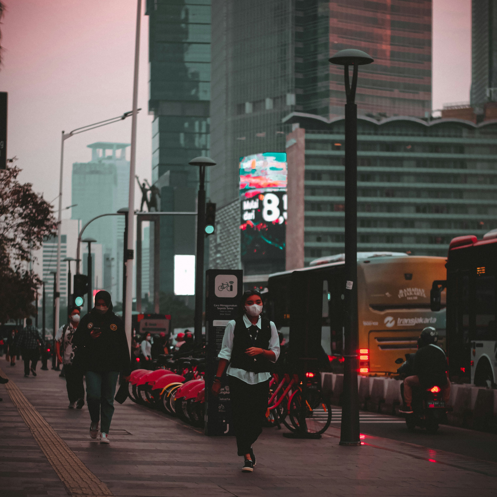

Review: Jakarta, The City That Never Sleeps
Jakarta, Indonesia’s bustling capital, is a city of contrasts. It is the country’s economic powerhouse, political center, and cultural melting pot. With over ten million residents and millions more commuting daily, Jakarta is a city that truly never sleeps. It can feel overwhelming at first, but once you embrace its rhythm, Jakarta reveals its fascinating character.
When you first set foot in Jakarta, the energy of the city hits you right away. The skyline is filled with modern skyscrapers, but in between, you’ll still find traditional neighborhoods and street markets. The traffic is notorious, but it’s also part of the authentic Jakarta experience. Ride-sharing apps and public transportation like MRT, TransJakarta buses, and commuter trains are making it easier to get around.
Culture and Lifestyle
Jakarta is home to people from all over Indonesia, making it one of the most diverse cities in the country. Here you can hear dozens of languages and dialects, see traditional clothing from various regions, and taste food from across the archipelago. At the same time, Jakarta embraces modern trends with chic cafés, rooftop bars, and shopping malls that rival those in Singapore or Kuala Lumpur.
The Jakarta Experience: Pros and Cons
Pros:
- Wide range of entertainment, shopping, and cultural attractions.
- A vibrant mix of tradition and modernity.
- Endless food options for every budget.
Cons:
- Traffic jams can eat up hours of your day.
- Air pollution is a serious issue, affecting health and quality of life.
- Overcrowding in public spaces can be overwhelming.
Final Thoughts
Jakarta is not everyone’s cup of tea, but that’s exactly what makes it special. Some may find it chaotic, but others fall in love with its vibrancy and diversity. Beneath the noise and traffic, Jakarta hides countless stories, experiences, and opportunities. Whether you come for business, culture, or simply curiosity, Jakarta will leave you with memories that are as dynamic as the city itself.